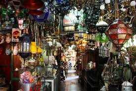

LOKASI DAERAH PARIWISATA
solo
.png)
Destinasi pelesiran berupa air terjun setinggi 80 meter.
Di tempat wisata di Solo ini, berbagai koleksi peninggalan kasunanan disimpan
seperti misalnya gamelan, replika pusaka keraton, dan benda-benda lain yang merupakan pemberian dari raja-raja Eropa.
Taman Sriwedari telah menjadi pusat hiburan, seni, dan budaya masyarakat Solo dan sekitarnya.
wisatawan bisa mendapat aneka batik dengan motif dan corak yang beragam
Pasar Triwindu antara lain patung batu dan kayu, uang kuno, radio lawas, senjata kuno, perabot rumah tangga,
wayang, jam dinding, cangkir, mesin ketik,
telepon tua, dan masih banyak lagi yang lainnya.

kolam renang luas, seluncuran, aneka permainan anak, dan ombak buatan,
satu hal yang membuat objek wisata ini unik dan begitu disukai wisatawan
Objek wisata sejarah-edukasi ini letaknya tidak jauh dari situs fosil purbakala Sangiran,
yang sudah ditetapkan oleh UNESCO sebagai salah satu warisan dunia.
Tidak banyak wisatawan yang tahu kalau Solo juga mempunyai obyek wisata ramah anak berupa kebun binatang.